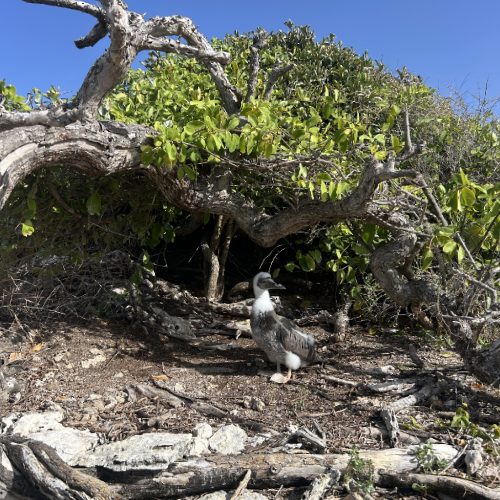
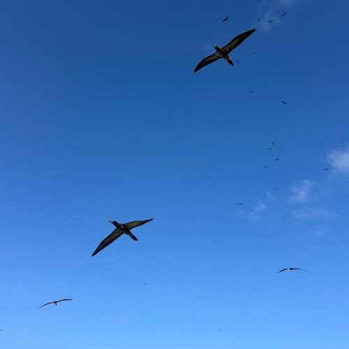
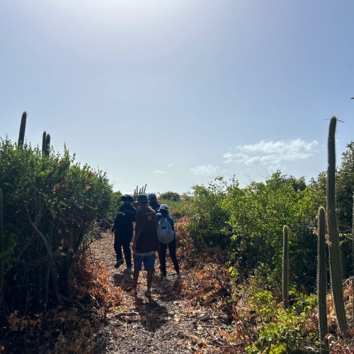
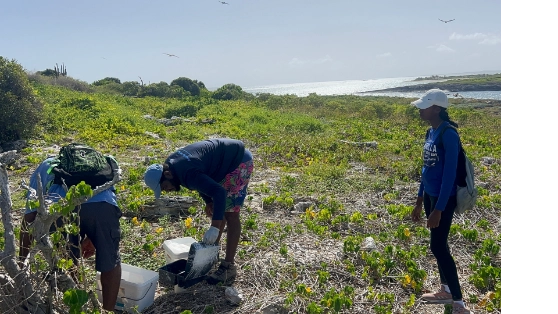
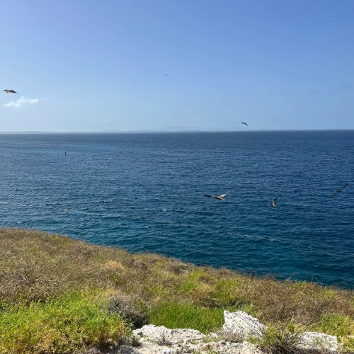

The Prickly Pear Cays aren't just home to hidden underwater caves and breathtaking beaches. They offer a safe home for thousands of nesting marine birds. Read more below.
The Anguilla National Trust is an NGO dedicated to preserving cultural heritage and protecting its natural habitats. They offer a variety of ecological tours that explore Anguilla's natural habitats in meaningful ways. We recently tagged along as volunteers on a research visit to Prickly Pear West, one of Anguilla's lesser-known offshore cays.
A Conservation Legacy Since 1989
Founded in 1989, the Trust has been a bulwark of environmental protection in Anguilla ever since. Beyond tours of the island's rugged terrain, they occasionally open volunteer spots on research trips to surrounding cays. When the chance to join a visit to Prickly Pear West came up, we weren't about to miss it.
Dawn Departure from Sandy Ground
Our day started at the crack of dawn. By 6:30 we had gathered at Sandy Ground; an hour later, we were already stepping onto Prickly Pear. The smooth, 40 minute boat ride under the Caribbean sunrise felt magical and we bonded over small conversation and getting to know each other. The early start was necessary — we needed to beat that unforgiving midday Caribbean sun.
Prickly Pear West is just as ruggedly breathtaking as its more popular sister cay, Prickly Pear East — home to the famous Johnno's @ Prickly Pear. But it has its own unique, unforgettable character.
Untouched, natural and charmingly jagged - the twin cays of Prickly Pear are a rarely visited side of Anguilla that's always rewarding to explore.
A Prehistoric Paradise
It felt like stepping into a prehistoric snapshot of native Anguilla. Endemic reptiles skittered past, unfazed by our presence. Fledgling Booby birds stared curiously as we passed by, completely unaware of any sense of danger.
The island is home to hundreds of nesting marine birds - the tiny island's sky is always a peppery delight of soaring magnificent frigate birds, laughing gulls and multiple varieties of the beloved Booby Bird.
Research Teams in Action
We split ourselves up into two teams. One team would track the checkpoints to the north, while the other team would survey the southern checkpoint.
This was a volunteer trip after all. We were actually accompanying a research team from the National Trust visiting the island… We were there to put in the work.
Our tasks included surveying checkpoints for signs of predator activity and monitoring nesting marine bird populations. It was important work and required some effort and focus.
Southern Views and Island Perspectives
We were lucky enough to get placed on the southern site team. On our two hour trek across the various checkpoints, we had endless views of Anguilla to the south.
Check us out on TikTok for a quick vlog on our entire day below!
@roamanguilla We tagged along and volunteered with the Anguilla National Trust on Prickly Pear, one of Anguilla's northwestern cays. Follow the rest of the story at https://roamaxa.app/blog #anguilla #fyp #anguillatiktok🇦🇮 #island #vacation #adventurea #birds #birdsoftiktok #trend #travel ♬ original sound - Roam Anguilla
We did a full loop around the southern end of the island and eventually made it back to our original checkpoint in about 3 hours. We were a little exhausted but still early so a few of us took a dip in the ocean while we waited.
A Meaningful Island Experience
Back on the mainland, The National Trust treated us to lunch before we said our goodbyes.
Overall, if you're in search of meaningful ways of exploring Anguilla I recommend reaching out to them to organize a tour of your very own. Spending time with the Anguilla National Trust is always an educational and fulfilling experience that opens up a world of information and insight about Anguilla that the average Joe just wouldn't know.
Want to get involved? Check out the Anguilla National Trust website or message them on Facebook— they usually reply faster there.
Join the Conversation